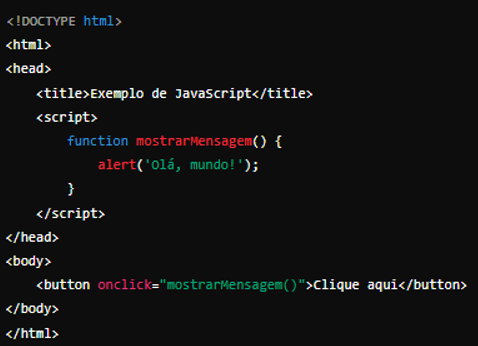

Desenvolvimento Web
JavaScript é uma linguagem de programação usada para tornar as páginas da web interativas e dinâmicas.
Exemplo Básico

HTML: Define a estrutura da página.
JavaScript: Define a função mostrarMensagem que exibe um alerta.
Botão: Quando clicado, chama a função mostrarMensagem.
O que é Node.js?
Node.js é uma plataforma de desenvolvimento que permite executar JavaScript no lado do servidor. Antes do Node.js, JavaScript era usado principalmente para o desenvolvimento no lado do cliente (no navegador). Com o Node.js, você pode usar JavaScript para criar aplicações completas, tanto no lado do cliente quanto no lado do servidor.
Exemplo Básico
Módulo HTTP: http é um módulo interno do Node.js que permite criar servidores web.
Servidor: O servidor criado responde com "Hello, World!" a qualquer solicitação recebida.
Porta: O servidor é configurado para escutar na porta 3000.
E por que usaríamos o Node.js?
Pelo simples motivo da alta performance, é rápido e eficiente adequado para aplicações em tempo real.
Variáveis em JavaScript
Elas são usadas para armazenar dados que podem ser manipulados e usados ao longo do código
Var
As variáveis declaradas com var são içadas (hoisted) para o topo de seu contexto de execução, o que significa que podem ser usadas antes de serem declaradas.
Let
Variáveis declaradas com let são içadas, mas não podem ser usadas antes de serem declaradas.
Const
O valor de uma variável const não pode ser reatribuído, mas objetos e arrays podem ser mutáveis.
Tipos de Dados
JavaScript é uma linguagem de tipagem dinâmica, o que significa que o tipo da variável é determinado pelo valor atribuído a ela.
Números
Inteiros e pontos flutuantes.
Strings
Texto, delimitado por aspas simples ou duplas.
Booleanos
Verdadeiro ou falso.
Arrays
Lista de valores, que podem ser de tipos diferentes.
Objetos
Coleção de pares chave-valor.
Null e Undefined
null é um valor intencionalmente vazio.
undefined significa que a variável foi declarada, mas não foi inicializada.
Tratamento de dados em JavaScript
Manipulação de Strings:
Strings são um dos tipos de dados mais comuns que precisam ser manipulados.
Concatenar Strings
Métodos de String:
length: Retorna o comprimento da string.
toUpperCase(): Converte a string para maiúsculas.
toLowerCase(): Converte a string para minúsculas.
slice(): Extrai uma parte da string.
replace(): Substitui parte da string por outra.
Manipulação de Arrays
Arrays são usados para armazenar múltiplos valores em uma única variável.
Adicionar e Remover Elementos
push(): Adiciona um elemento ao final do array.
pop(): Remove o último elemento do array.
shift(): Remove o primeiro elemento do array.
unshift(): Adiciona um elemento no início do array.
Métodos de Array
forEach(): Executa uma função para cada elemento do array.
map(): Cria um novo array com os resultados de uma função aplicada a cada elemento.
filter(): Cria um novo array com todos os elementos que passam em um teste.
reduce(): Aplica uma função a um acumulador e a cada elemento do array (da esquerda para a direita) para reduzi-lo a um único valor.
Manipulação de Objetos
Estruturas de Decisão em JavaScript
as estruturas de decisão mais comuns são if, else, else if, switch
if e else
A estrutura if é usada para executar código se uma condição for verdadeira. O else é usado para executar outro código se a condição for falsa.
else if
O else if permite testar múltiplas condições.
switch
A estrutura switch é usada para executar um bloco de código baseado no valor de uma expressão. É uma alternativa ao uso de múltiplos else if.
Operador Ternário
O operador ternário é uma forma concisa de fazer uma atribuição condicional. Ele é útil para expressões simples que retornam um valor com base em uma condição.
Estruturas de Repetição em JavaScript
Existem diferentes tipos de loops disponíveis para diferentes situações: for, while, do while
For
O loop for é usado quando você sabe com antecedência quantas vezes deseja repetir um bloco de código.
Neste exemplo, a variável i começa em 0 e é incrementada em 1 a cada iteração, até que i seja menor que 5.
While
O loop while é usado quando você quer repetir um bloco de código enquanto uma condição é verdadeira.
Aqui, o loop continua enquanto contador for menor que 5.
Do while
é semelhante ao while, mas garante que o bloco de código seja executado pelo menos uma vez antes de verificar a condição.
Neste caso, o loop sempre executa o bloco de código uma vez antes de verificar a condição.
Funções em JavaScript
Funções são código reutilizáveis que executam uma tarefa específica. Elas podem receber entradas, chamadas de argumentos, e retornar um valor.
Declaração de Função
Expressão de Função
Parâmetros e Argumentos
Parâmetros Padrão